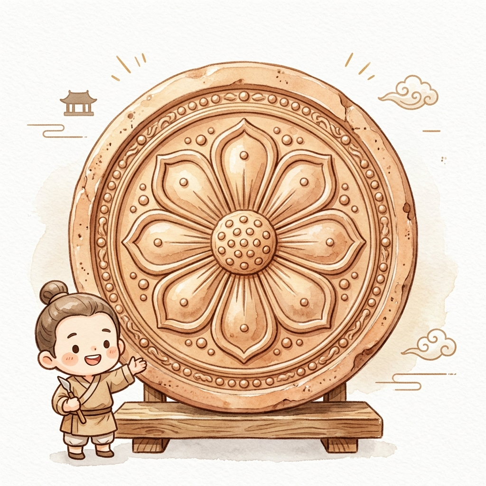
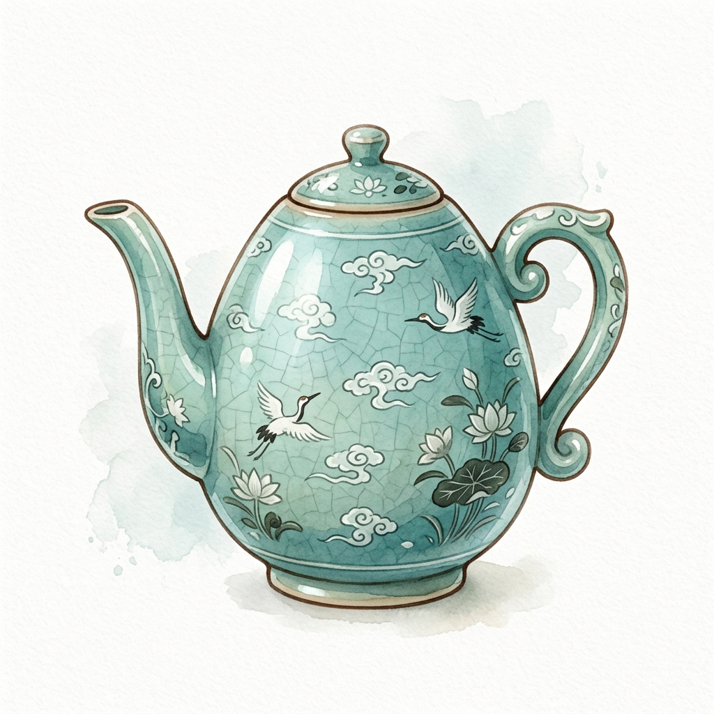

🏛️
DIGITAL HERITAGE
디지털 헤리티지 큐레이터
컬렉션
3D 워크스페이스

No. 18-1
수막새
八葉蓮花紋瓦當
백제
▼

No. 81
청자 주전자
靑瓷酒煎子
고려시대
▼
🏺
유물 카드에 마우스를 올려보세요
위의 카드를 선택하면
3D 모델이 이 화면에 표시됩니다.
No. —
—
—
—
● 3D 로드됨
📋 유물 제원
📝 상세 설명
🔬 큐레이터 워크스페이스 열기
→